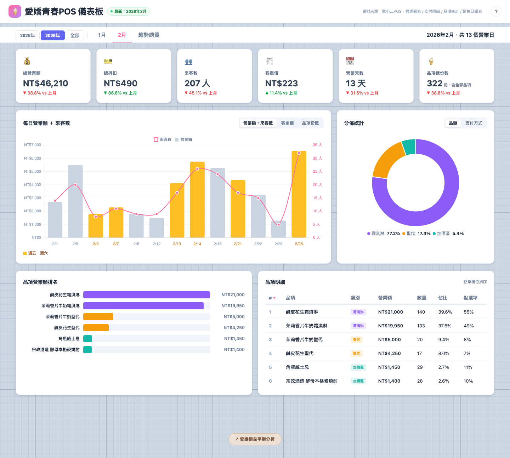
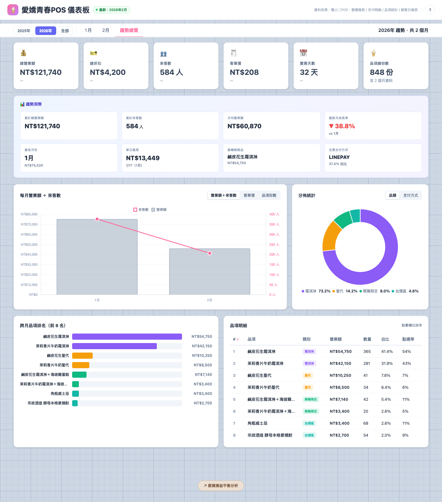

用 AI 從零打造
POS 營運分析儀表板
愛嬌青春製冰室需要一個方式來理解每月營運狀況，但 POS 系統只能匯出原始 CSV。這篇紀錄了如何用 AI 在一週內，從零建出一個可持續使用的營運儀表板。

為什麼要做這件事
開店後，每個月都會從 POS 系統匯出營運資料 — 營收多少、哪些品項賣得好、客人用什麼方式付款。但這些資料散落在四份不同的 CSV 檔案裡，打開來就是一堆數字，完全看不出趨勢。
我需要的其實很簡單：一個網頁，上傳 CSV 就能看圖表，能分享連結給合夥人。
技術選型
| 選擇 | 決定 | 理由 |
|---|---|---|
| 架構 | 單一 HTML 檔案，資料內嵌 | 零基礎設施成本，不需後端也不需資料庫 |
| 圖表 | Chart.js 4.4 | 免費、輕量、社群成熟 |
| 部署 | Cloudflare Pages | 免費靜態託管，GitHub push 後自動上線 |
| 發布方式 | 內建 GitHub API push | 不需開終端機，網頁上按一個按鈕就能發布 |
| 資料前處理 | Claude Code skill | 銷售日報表需從原始訂單 Excel 轉換為每日品項數量 CSV |
AI 怎麼幫我做到的
- 所有 HTML / CSS / JavaScript 程式碼撰寫
- Chart.js 圖表配置與資料綁定
- CSV 解析邏輯（不同報表格式的欄位對應）
- GitHub API 串接（網頁內一鍵發布）
- 響應式設計（手機、平板、桌面適配）
- 決定要看哪些指標（營業額、來客數、客單價）
- UI 風格偏好（方眼紙背景、品牌粉色）
- 業務邏輯判斷（品項分類、付款方式）
- 資料正確性驗證（對照 POS 原始數字）
- 功能優先級排序
我的做法是逐步堆疊，每次只加一件事。先做最基本的月報頁面（KPI 卡片 + 折線圖），確認數字正確後，再加品類分佈、品項排行、月份切換、趨勢總覽、Admin 模式，最後才做分享和通知模板。
每一步都是：我描述需求 → AI 寫出來 → 我看結果 → 微調。43 次 commit，大約就是 43 輪這樣的迭代。整個過程在 5 個活躍開發日內完成。
一開始，每次更新月份資料後，需要下載整個 HTML 檔案，再手動用 git push 推上去。後來直接在網頁裡串 GitHub API，按一個按鈕就能發布。這讓整個「每月更新」流程從需要開終端機變成只需要開瀏覽器。
四種報表中，前三種（營運報表、支付明細、品項統計）從 POS 匯出就是 CSV，可以直接上傳。但第四種「銷售日報表」匯出的是原始訂單 Excel — 每一列是一筆訂單，品項全部擠在同一欄裡。儀表板需要的是「每天每個品項賣了幾份」的格式。用 Claude Code 建了一個 sales-report-parser skill，自動把原始訂單 Excel 轉成每日品項數量的樞紐表 CSV。
git 歷史裡有大量 UI 相關的 commit（字體大小、間距、背景樣式），都是在瀏覽器裡看了覺得「這裡不太對」，然後描述給 AI 調整的。這種視覺微調特別適合 AI 協作 — 你不需要知道 CSS 語法，只需要說「這個字太小了」「間距再大一點」。
最終成果
一個部署在 aikyo-pos.pages.dev 的營運分析儀表板，整個應用是一個 2,600 行的 index.html，沒有後端、沒有資料庫、沒有框架。每月維護成本：$0。
| 功能 | 說明 |
|---|---|
| 月度總覽 | 營業額、來客數、客單價、營業天數，附與上月比較 |
| 每日趨勢圖 | 折線圖 + 長條圖，可切換營業額 / 來客數 / 客單價 / 出杯數 |
| 分佈統計 | 品類和付款方式的環形圖 |
| 品項排名 | 橫條圖 + 可排序明細表 |
| 趨勢總覽 | 跨月比較頁面，含洞察分析 |
| Admin 模式 | 上傳 CSV、一鍵發布、LINE 通知模板、分享連結 |
| 深度連結 | 透過 URL 參數直接開啟特定月份或年度 |

踩到的坑
前三種報表從 POS 匯出就是乾淨的 CSV，直接上傳沒問題。但銷售日報表匯出的是原始訂單 Excel — 每列一筆訂單，品項資訊全部塞在同一欄、用換行分隔，格式像 2 x 冰品-芒果冰沙 (甜度: 正常)。儀表板需要的是「日期 × 品項 × 數量」的樞紐表，兩者差了一整個轉換步驟。最後建立 sales-report-parser skill 自動完成拆解與彙總。
把所有東西塞進一個 HTML 檔的好處是部署極簡，但檔案會越來越大。目前三個月的資料約 120 KB，還可以接受。但累積到 12 個月以上，可能需要拆分資料。
一開始「發布」按鈕在一般模式也看得到，任何人都能按。後來改成只在 ?admin 模式（需要密碼）才顯示，避免訪客誤觸。
如果繼續往下
- 資料量成長後，可以把月份資料拆成獨立 JSON 檔案，index.html 按需載入，避免單檔膨脹
- 加入損益平衡分析 — footer 已經預留了連結，把成本資料加進來就能算出真正的盈虧
- 做成 Progressive Web App（PWA），讓手機可以像 App 一樣開啟
- 把
sales-report-parserskill 做成網頁版，讓不用 Claude Code 的人也能轉換銷售日報表
Takeaway
不需要會寫程式，也能用 AI 從零建出一個「真的可以用」的營運工具。關鍵不在技術能力，而在於：
這個方法適用於任何「有固定格式的資料來源 + 需要視覺化呈現」的情境 — 餐廳月報、電商銷售儀表板、團隊 KPI 追蹤頁面。不適用於需要即時資料更新、多人同時編輯、或資料量非常大的場景。
1.「我有一份這樣格式的 CSV（貼範例），幫我做一個網頁儀表板，顯示 [你想看的指標]」
2.「這個儀表板要能部署到免費的靜態網站託管服務，不需要後端」